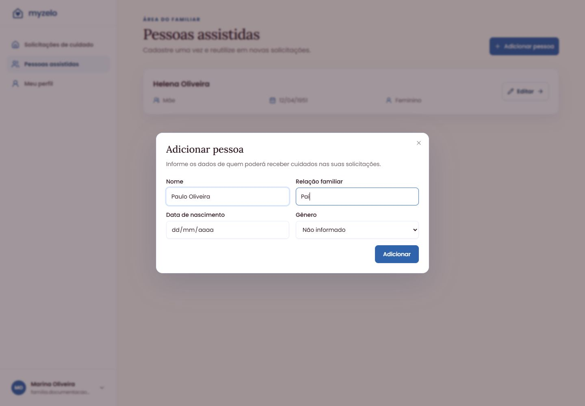
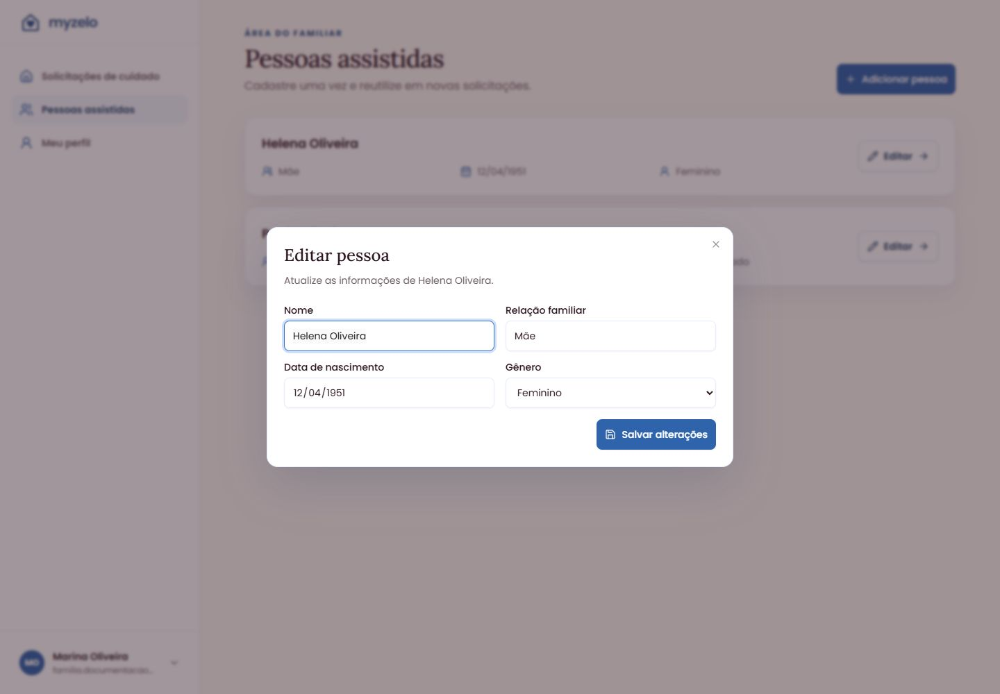
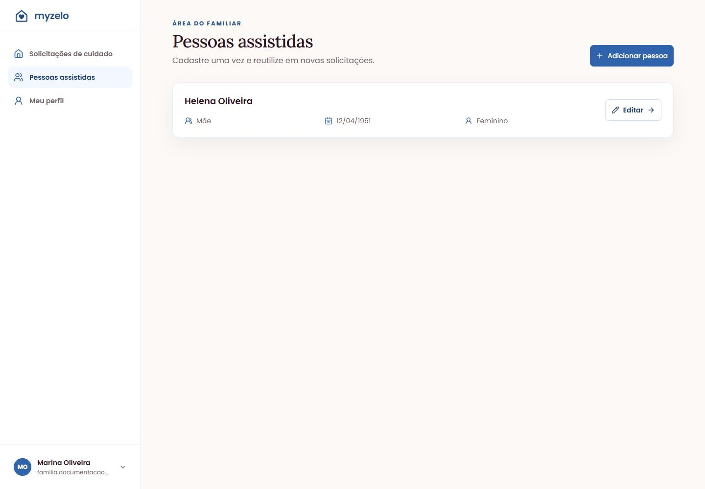

Cadastros
Cadastrar e editar pessoas assistidas
Mantenha os dados de quem poderá receber cuidado e reutilize-os nas solicitações.
Adicionar uma pessoa
- Abra Pessoas assistidas e clique em Adicionar pessoa.
- Informe Nome e Relação familiar, por exemplo, “Helena Oliveira” e “Mãe”.
- Preencha Data de nascimento e Gênero se desejar informar esses dados.
- Clique em Adicionar e confira o cartão da pessoa na lista.


Corrigir um cadastro
- No cartão da pessoa, clique em Editar.
- Confira os campos da janela Editar pessoa.
- Altere as informações necessárias e clique em Salvar alterações.
- Confira os dados atualizados no cartão.


Usar em uma solicitação
Na etapa Pessoa assistida de uma nova solicitação, escolha Pessoa cadastrada e selecione o cadastro. Você também pode cadastrar uma pessoa diretamente nessa etapa.


Resultado esperado
A pessoa fica cadastrada e pode ser selecionada em novas solicitações.
Regras que você precisa conhecer
- Nome e relação familiar são obrigatórios para uma nova pessoa.
- A data de nascimento não pode ser futura.
- Solicitações já enviadas preservam os dados registrados no envio; editar o cadastro não reescreve esse histórico.
- A tela atual de Pessoas assistidas apresenta Adicionar e Editar; não oferece exclusão no cartão.